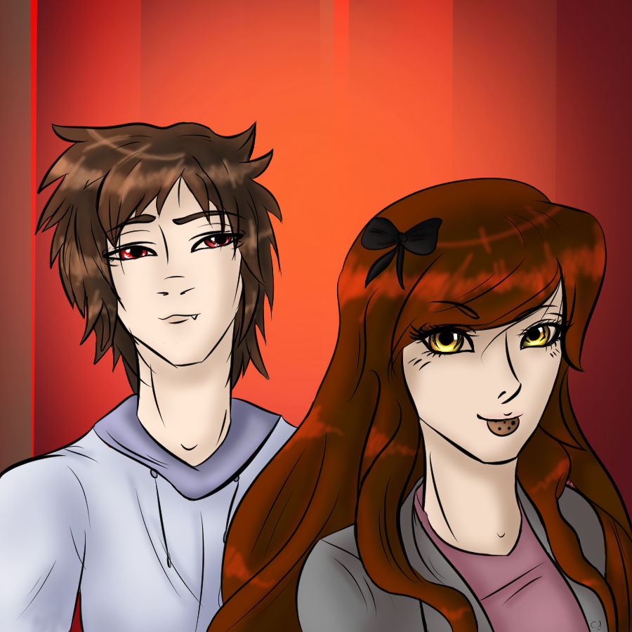

"A mystic as one of my closest friends... and it's a girl, take that Bonnie!" -Landon to Sugar
Song: "A.M. 180"
Full Name: Landon Carsen
Nicknames: Idiot (Just about anybody)
Age: 23
Birthday: September 30
Height: 5'7
Race: Vampire (Formerly Human)
Title: Epic Gamer Boi
Current Appearance: Bed-head Brown hair and Red Eyes, White N64 Hoodie
Mask Visage: Basic Phantom of the Opera Mask
Hobbies: Making rude remarks, Smoking Weed from time to time, Playing Video Games with his friends
Skills: Being cowardly
Strengths: Great at hiding, Can slip his way out of danger (Since nobody pays attention to him), Vampire strength. Does that count in strengths?
Weaknesses: Insenstive towards other people's feelings, Inability to make big decisions for himself (Freezes when having to help somebody in danger which gets Val stabbed in the shoulder)
Likes:Sugar, video games, pizza and staring at girl's 'tails'. Oh, did I mention video games?
Dislikes: Being picked on/called out, his friends getting hurt (mostly focused on Sugar) and losing his winning streak in his video games. Getting stuck in a springlock suit that's close to snapping while his girlfriend beats up her brother.
An epic gamer who didn't really do much besides hanging out with his best friend Bonnie.
Bonnie (Positive)
Landon's best friend since high school. They often hang out together and play games. Although they hang out less often ever since Landon found himself a lady friend
Sugar (Positive)
Landon's girlfriend. She's one of the only people who puts up with his antics and she has saved his life a few times so he's stuck with her. Is also his 'gaming setup' aka a lap to rest his head on when they play games. They are extremely comfortable together, and don't get them drunk unless you are okay with watching two hormonal people get at each other with no inhibitions.
Mason (Neutral)
He's the vampire Landon fought on the ship (who also made him gay panic since he was shirtless but that's not important) who then slashed his wing and offered to train him in the 'vampire ways' in trade for his life when Landon had him held over the ships railing over the seas below.
Valentine (Negative)
Dislikes Val since she often gets annoyed at his remarks about Eren even if he states "It's all in good fun"
Eren (Negative)
Hates Eren for some reason.
Lucille (Negative)
Not much is known about Lucille from Landon's point of view except she kidnapped Sugar, forced her to dance, shocked her and tried to convince her that he cheated on her. So of course Landon had to kill her in a very..vampire-esqe way. Safe to say Landon hates her guts.